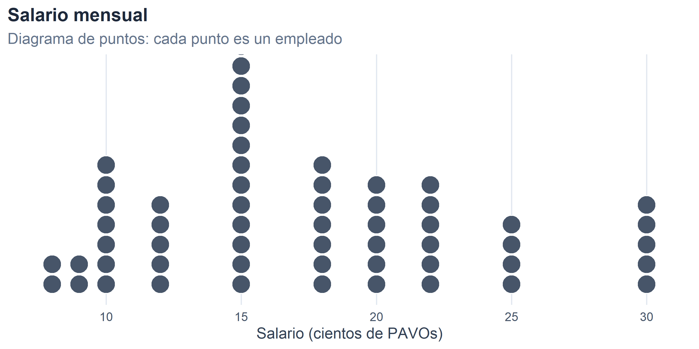
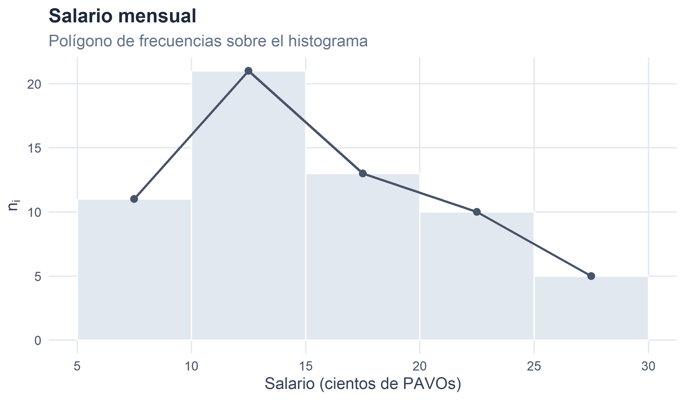
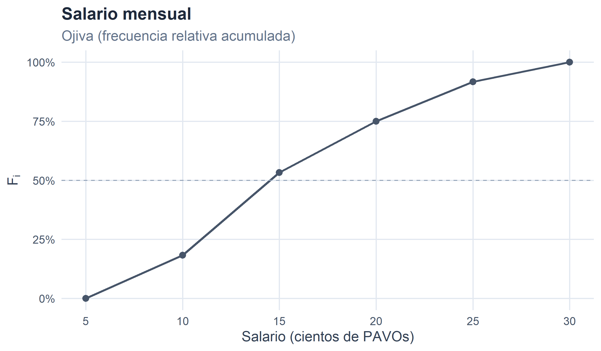
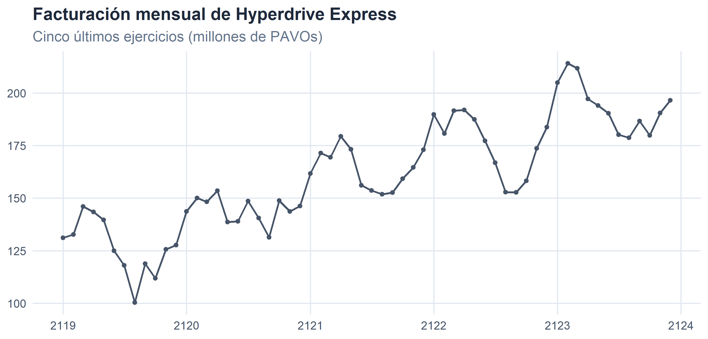
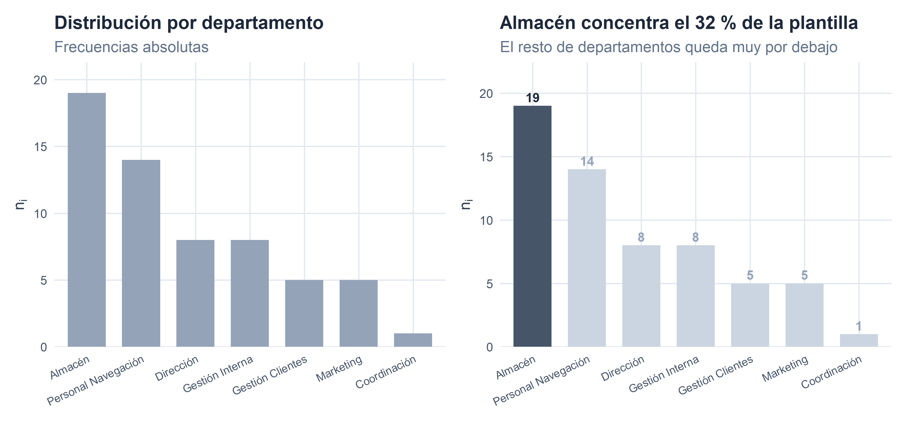

1 Estadística Económica y Empresarial.

Figura 1.1. Estadística: quiénes somos y a dónde vamos…
1.1 ¿Qué es la Estadística?
Hoy en día, todo el mundo habla de las estadísticas. Constantemente se hace referencia a ellas en los medios de comunicación, dando la sensación de que todo está medido y estructurado por estos entes que convierten la realidad empírica en una amalgama de números. Esto es especialmente relevante en el campo del comportamiento humano y las Ciencias Sociales, donde a diario recibimos estadísticas sobre el crecimiento de la economía en términos del PIB, el comportamiento de los precios medido mediante la inflación, o la intención de voto ante unas elecciones.
En este contexto, podemos definir la Estadística no solo como una disciplina científica, sino fundamentalmente como una ciencia instrumental. Esto significa que, más que un fin en sí misma, actúa como una herramienta metodológica al servicio de otras disciplinas, como la Economía o la Administración de Empresas.
Como ciencia instrumental, la estadística persigue un doble objetivo fundamental:
Recogida y análisis de datos que describan la realidad: Esta primera vertiente (que conforma la Estadística Descriptiva) se ocupa de la recopilación estructurada de los datos, su depuración y la caracterización de un conjunto de casos o individuos a través de dicha información empírica. Nos permite organizar la información para obtener una visión inicial, clara y concisa de lo que está ocurriendo.
Modelizar el comportamiento de la realidad cuando existe incertidumbre: El segundo gran objetivo consiste en aplicar modelos matemáticos para representar y entender el comportamiento de aquellos fenómenos económicos y empresariales que no son deterministas, es decir, que están sujetos a incertidumbre y al azar.
Finalmente, todo este proceso estructurado de recopilación, descripción y modelización probabilística no es un mero ejercicio teórico, sino que tiene un propósito final muy claro: servir de ayuda y tecnología para la toma de decisiones. Al transformar datos complejos y entornos inciertos en información medible, la estadística proporciona a empresas e instituciones el rigor necesario para tomar decisiones fundamentadas.
1.2 Estadística y Ciencia Económica.
La Ciencia Económica estudia cómo los agentes —familias, empresas, sectores, administraciones públicas— toman decisiones bajo restricciones de recursos. Esas decisiones no se toman en el vacío: dependen de los precios, los costes, las cantidades vendidas, el paro, el tipo de interés, la confianza del consumidor… es decir, de magnitudes medibles cuya evolución conocemos solo de forma parcial e imperfecta. Por esta razón, prácticamente cualquier rama de la Economía y de la Administración de Empresas necesita de la Estadística:
- La contabilidad y las finanzas requieren resumir grandes volúmenes de datos en indicadores que permitan diagnosticar la situación de una empresa o de un mercado.
- El marketing se apoya en encuestas, segmentaciones de clientes y modelos de comportamiento del consumidor que son, en última instancia, ejercicios estadísticos.
- La macroeconomía trabaja con series temporales (PIB, IPC, tasa de paro, tipo de cambio) cuya elaboración, depuración y análisis son tareas inequívocamente estadísticas.
- La dirección estratégica debe anticipar escenarios y cuantificar riesgos, lo que solo es posible con modelos de probabilidad.
Estos retos no son exclusivos de la economía planetaria. A lo largo del libro acompañaremos algunos ejemplos con datos extraídos del proyecto R-Stars, una base de 300 empresas ficticias dedicadas al transporte interestelar de mercancías, que en el siglo XXII operan rutas comerciales por buena parte de la galaxia conocida. Aunque las distancias se midan en años luz y los salarios se cobren en PAVOs, los problemas económicos son sorprendentemente parecidos: hay que cuadrar plantillas, fidelizar clientes, vigilar márgenes y, sobre todo, tomar decisiones con información incompleta. Como en cualquier mercado terrestre o galáctico, para ello hace falta Estadística.
1.3 Población, muestra e individuo.
Antes de aplicar ninguna técnica estadística necesitamos delimitar sobre qué vamos a trabajar. Para ello empleamos tres conceptos básicos:
Población: conjunto de todos los casos que comparten una característica que nos interesa estudiar. Por ejemplo, los hogares de Castilla-La Mancha, las empresas manufactureras con sede en la Unión Europea, o todas las compañías de transporte interestelar registradas en el sector R-Stars.
Individuo o caso: cada uno de los elementos que componen la población. Pese al término, un individuo no tiene por qué ser una persona: puede ser una empresa, un hogar, una transacción, una factura, un país, un día de cotización en bolsa o un carguero espacial.
Muestra: subconjunto de la población seleccionado con criterios de representatividad para estudiarlo en sustitución del total. Trabajar con la muestra resulta imprescindible cuando observar a todos los individuos de la población es inviable por motivos de coste, tiempo o accesibilidad. (Recorrer la galaxia entera empresa por empresa, por ejemplo, sale algo caro en combustible.)

Figura 1.2
Ejemplo. El Consejo Galáctico de Comercio quiere estudiar la satisfacción laboral del personal de pilotaje en el sector del transporte interestelar. La población son todos los pilotos registrados en activo; cada individuo es uno de esos pilotos. Como entrevistar a todos sería inviable (sin entrar en que muchos pasan media vida en hiperespacio), se selecciona una muestra de, pongamos, 2.500 pilotos, repartida proporcionalmente por sector galáctico, antigüedad de la flota y tipo de ruta, de modo que reproduzca a pequeña escala la estructura de la población.
1.4 El método estadístico: descripción e inferencia.
Las dos grandes formas de explotación de los datos que utilizaremos en este libro son:
La Estadística Descriptiva, cuyo objetivo es resumir y representar el comportamiento del conjunto de casos observados (sea una muestra, sea la población completa) con respecto a una o varias características. Sus herramientas son las tablas de frecuencias, los gráficos y las medidas de resumen (media, mediana, varianza, etc.).
La Estadística Inferencial, que busca extender las conclusiones obtenidas en una muestra al conjunto de la población. Para ello necesita modelos de probabilidad que permitan cuantificar la incertidumbre asociada a esa generalización, lo que en la práctica se traduce en intervalos de confianza y contrastes de hipótesis.
Esquemáticamente, el método inferencial consiste en avanzar de lo particular (la muestra) a lo general (la población) siguiendo estos pasos:
- Delimitar la población y la característica de interés.
- Seleccionar una muestra representativa.
- Medir la característica en los individuos de la muestra.
- Resumir los datos muestrales mediante la Estadística Descriptiva.
- Generalizar los resultados a la población empleando los modelos de probabilidad.
En este primer capítulo, y a lo largo del Bloque I del libro, nos centramos en los pasos (1) a (4). El resto del proceso se irá construyendo en los bloques de Probabilidad e Inferencia.
1.5 Un ejemplo de referencia: Hyperdrive Express.
Para ilustrar de forma uniforme los conceptos que siguen, utilizaremos un ejemplo extraído del universo R-Stars: la plantilla de Hyperdrive Express, una compañía galáctica (C.G.) de tamaño medio con sede en Miranda, en la Gran Nube de Magallanes. La empresa opera una flota renovada de 24 cargueros y algo más de un millar de rutas de largo alcance, y presenta un perfil financiero saneado —márgenes por encima del 60 % y una rentabilidad económica cercana al 45 %—, lo que la sitúa entre las medianas más rentables de su galaxia. Buena parte de su reputación se debe a las conexiones rápidas que enlazan Miranda con los sistemas más alejados del brazo exterior, aprovechando —y de ahí el nombre— los saltos de hipervelocidad que hace ya unas décadas dejaron de ser ciencia ficción.
La empresa tiene 60 trabajadores en plantilla. De cada uno de ellos disponemos de tres características:
- Salario bruto mensual, en cientos de PAVOs (variable cuantitativa).
- Nivel de estudios: Básicos, Medios o Universitarios (atributo ordinal).
- Departamento al que pertenece: Almacén, Gestión Interna, Gestión Clientes, Personal Navegación, Marketing, Coordinación o Dirección (atributo nominal).
Los datos que utilizaremos son sintéticos —en un caso real provendrían del sistema de Recursos Humanos de la compañía—.
Las primeras filas del fichero quedan así:
| Cód. | Nombre | Salario | N. Estudios | Departamento |
|---|---|---|---|---|
| E001 | Naomi Hirundo | 12 | Básicos | Almacén |
| E002 | Kyle Pavo | 10 | Medios | Personal Navegación |
| E003 | Kyle Vultur | 22 | Universitarios | Almacén |
| E004 | Faye Bucephala | 22 | Universitarios | Almacén |
| E005 | Morpheus Pyrrhula | 12 | Básicos | Coordinación |
| E006 | River Tachyeres | 15 | Medios | Gestión Clientes |
Tabla 1.1. Primeros casos del fichero de empleados de Hyperdrive Express.
A partir de este pequeño conjunto de datos vamos a ir introduciendo, sección a sección, los conceptos del capítulo.
1.6 Variables, atributos y escalas de medida.
Las características medidas sobre los casos no son todas del mismo tipo. La distinción fundamental es:
Variables (cuantitativas): características que se concretan en valores numéricos sobre los que tiene sentido realizar operaciones aritméticas. Ejemplos: el salario percibido, las unidades vendidas, los años de antigüedad o el número de años luz recorridos por una flota.
Atributos (cualitativos o factores): características que se concretan en categorías, no en cifras. Aunque podamos asignarles códigos numéricos, las operaciones aritméticas sobre esos códigos carecen de sentido. Ejemplos: el nivel de estudios, el sector productivo, el planeta de origen o el estado civil.
A su vez, según el tipo de información que aportan, distinguimos tres escalas de medida:
| Escala | Tipo de característica | Operaciones admisibles | Ejemplo |
|---|---|---|---|
| Nominal | Atributo | Igualdad / distinción | Departamento de un empleado |
| Ordinal | Atributo | Igualdad y orden | Nivel de estudios (Básicos < Medios < Universitarios) |
| Métrica (intervalo o razón) | Variable | Igualdad, orden, suma, diferencia, cociente | Salario en PAVOs |
Tabla 1.2
La escala condiciona qué medidas de resumen y qué gráficos son aplicables. Calcular la media del Departamento no tiene ningún sentido (¿cuánto es la media entre Almacén y Marketing?); sí lo tiene calcular su moda (el departamento más frecuente). En cambio, para el salario podemos calcular media, mediana, varianza o cualquier otra medida numérica de las que veremos en el capítulo siguiente.
1.7 Distribuciones de frecuencias.
Una vez recogidos los datos brutos (la tabla de casos × características), el siguiente paso es organizarlos. La forma más básica de hacerlo es construir, para cada característica, una distribución de frecuencias: una tabla que indica cuántos casos toman cada valor (o caen en cada categoría).
Denotemos por \(x_i\) los valores que toma la característica (o las categorías, si es un atributo), ordenados cuando ello tenga sentido. Las cantidades de interés son:
- Frecuencia absoluta \(n_i\): número de casos que toman el valor \(x_i\).
- Frecuencia total \(N = \sum_i n_i\): número total de casos.
- Frecuencia absoluta acumulada \(N_i = \sum_{j \le i} n_j\): número de casos con valor menor o igual que \(x_i\).
- Frecuencia relativa \(f_i = n_i / N\): proporción de casos con valor \(x_i\). Cumple \(\sum_i f_i = 1\).
- Frecuencia relativa acumulada \(F_i = \sum_{j \le i} f_j\). Cumple \(F_{\text{último}} = 1\).
Las frecuencias acumuladas solo tienen sentido cuando los valores \(x_i\) se pueden ordenar: en variables, en atributos ordinales o en intervalos. En un atributo nominal (departamento, sector, color), no hay un orden natural y la acumulación carece de interpretación.
1.7.1 Distribución de frecuencias de una variable.
Empezamos por el salario, que es una variable cuantitativa. La distribución de frecuencias se construye agrupando por los valores distintos de \(x_i\):
| \(x_i\) (Salario) | \(n_i\) | \(N_i\) | \(f_i\) | \(F_i\) |
|---|---|---|---|---|
| 8 | 2 | 2 | 0.0333 | 0.0333 |
| 9 | 2 | 4 | 0.0333 | 0.0667 |
| 10 | 7 | 11 | 0.1167 | 0.1833 |
| 12 | 5 | 16 | 0.0833 | 0.2667 |
| 15 | 16 | 32 | 0.2667 | 0.5333 |
| 18 | 7 | 39 | 0.1167 | 0.6500 |
| 20 | 6 | 45 | 0.1000 | 0.7500 |
| 22 | 6 | 51 | 0.1000 | 0.8500 |
| 25 | 4 | 55 | 0.0667 | 0.9167 |
| 30 | 5 | 60 | 0.0833 | 1.0000 |
Tabla 1.3. Distribución de frecuencias del salario en Hyperdrive Express (cientos de PAVOs).
Lectura: la columna \(n_i\) indica cuántos empleados cobran exactamente \(x_i\) cientos de PAVOs; \(N_i\), cuántos cobran como máximo esa cantidad; \(f_i\) y \(F_i\) son las versiones relativas. De \(F_i\) se obtiene, por ejemplo, el porcentaje de la plantilla que cobra como mucho cada salario.
1.7.2 Distribución de frecuencias de un atributo ordinal.
| \(x_i\) (Nivel de estudios) | \(n_i\) | \(N_i\) | \(f_i\) | \(F_i\) |
|---|---|---|---|---|
| Básicos | 11 | 11 | 0.1833 | 0.1833 |
| Medios | 24 | 35 | 0.4000 | 0.5833 |
| Universitarios | 25 | 60 | 0.4167 | 1.0000 |
Tabla 1.4. Distribución de frecuencias del nivel de estudios de la plantilla.
Aquí las frecuencias acumuladas sí tienen sentido porque las categorías están ordenadas (Básicos → Medios → Universitarios). Podemos leer, por ejemplo, qué proporción de la plantilla tiene como mucho estudios medios.
1.7.3 Distribución de frecuencias de un atributo nominal.
| \(x_i\) (Departamento) | \(n_i\) | \(f_i\) |
|---|---|---|
| Almacén | 19 | 0.3167 |
| Personal Navegación | 14 | 0.2333 |
| Dirección | 8 | 0.1333 |
| Gestión Interna | 8 | 0.1333 |
| Gestión Clientes | 5 | 0.0833 |
| Marketing | 5 | 0.0833 |
| Coordinación | 1 | 0.0167 |
Tabla 1.5. Distribución de frecuencias del departamento.
En este caso no se han incluido \(N_i\) ni \(F_i\): dado que Departamento es un atributo nominal, no existe un orden natural entre sus categorías y acumular pierde significado (¿qué querría decir “porcentaje acumulado hasta Marketing”?).
1.7.4 Distribuciones agrupadas en intervalos.
Cuando una variable toma muchos valores distintos (o es continua), la tabla anterior se vuelve poco útil: tendría una fila por casi cada caso. En esa situación se agrupan los valores en intervalos o clases, obteniendo una distribución de frecuencias agrupada.
Para el intervalo \(i\)-ésimo \((L_{i-1}, L_i]\) definimos:
- \(L_{i-1}\), \(L_i\): extremos inferior y superior del intervalo.
- \(n_i\): frecuencia absoluta del intervalo (número de casos en él).
- Marca de clase \(x_i = (L_{i-1} + L_i) / 2\): punto medio, que se utiliza como representante numérico del intervalo.
- Amplitud \(c_i = L_i - L_{i-1}\).
- Densidad de frecuencia \(d_i = n_i / c_i\): número de casos por unidad de amplitud.
Por convenio, los intervalos son cerrados por la derecha y abiertos por la izquierda, salvo el primero, que se toma cerrado por ambos extremos para no excluir el menor valor observado.
Agrupemos el salario de la empresa en intervalos de 5 cientos de PAVOs de amplitud:
| Intervalo | \(x_i\) | \(c_i\) | \(n_i\) | \(N_i\) | \(f_i\) | \(F_i\) | \(d_i\) |
|---|---|---|---|---|---|---|---|
| [5,10] | 7.5 | 5 | 11 | 11 | 0.1833 | 0.1833 | 2.2 |
| (10,15] | 12.5 | 5 | 21 | 32 | 0.3500 | 0.5333 | 4.2 |
| (15,20] | 17.5 | 5 | 13 | 45 | 0.2167 | 0.7500 | 2.6 |
| (20,25] | 22.5 | 5 | 10 | 55 | 0.1667 | 0.9167 | 2.0 |
| (25,30] | 27.5 | 5 | 5 | 60 | 0.0833 | 1.0000 | 1.0 |
Tabla 1.6. Distribución agrupada del salario en intervalos de 5 cientos de PAVOs.
Por qué importa la densidad. Cuando todos los intervalos tienen la misma amplitud, \(n_i\) y \(d_i\) se diferencian solo en un factor común y dan la misma idea visual. Pero cuando las amplitudes son distintas, comparar frecuencias absolutas resulta engañoso: un intervalo muy ancho puede contener muchos casos simplemente por ser ancho. La densidad \(d_i\) corrige este efecto y permite comparar de forma honesta intervalos heterogéneos. Volveremos sobre esto al construir el histograma.
1.7.5 ¿Cuántos intervalos y de qué anchura?
En el ejemplo anterior fijamos los intervalos “a ojo”: cinco cortes de amplitud 5. Aunque la elección resulta razonable, cualquier lectura crítica preguntaría por qué cinco y no siete o diez. Existen criterios objetivos para responder.
El más clásico es la regla de Sturges, que fija el número de intervalos como
\[k = 1 + \log_2 N.\]
La intuición subyacente es que, si los datos siguen una distribución aproximadamente simétrica y campaniforme, ese es el número de celdas que absorbe con soltura una binomial de \(N\) ensayos. No es una demostración, sino una aproximación con base teórica, pero funciona sorprendentemente bien para tamaños muestrales pequeños o medianos (entre unas decenas y unos pocos cientos de casos).
Aplicada a los \(N = 60\) empleados de Hyperdrive Express:
\[k = 1 + \log_2 60 \approx 6,91 \approx 7 \text{ intervalos.}\]
Una vez fijado \(k\), los extremos se calculan dividiendo el recorrido de la variable (\(\max - \min\)) en \(k\) partes iguales:
\[c = \frac{\max - \min}{k}, \qquad L_0 = \min, \qquad L_i = L_{i-1} + c.\]
Con salarios entre 8 y 30 cientos de PAVOs, la amplitud teórica sería \(c \approx 3,14\), y los cortes teóricos vendrían dados por \(8,00;\ 11,14;\ 14,29;\ 17,43;\ 20,57;\ 23,71;\ 26,86;\ 30,00\). Poco cómodos para presentar en un eje.
Ese es exactamente el punto donde la teoría se encuentra con la práctica: los cortes teóricos casi siempre se redondean a valores cómodos —múltiplos de 5, 10 o 100, según la escala de la variable—, incluso a costa de mover \(k\) en una unidad. Aquí, redondear a múltiplos de 5 lleva a los cortes \(5;\ 10;\ 15;\ 20;\ 25;\ 30\) con los que ya hemos venido trabajando: \(k = 5\) intervalos en lugar de 7, pero mucho más legibles. En estadística descriptiva, la comunicación pesa tanto como el criterio numérico.
La regla de Sturges tiene un defecto conocido: al depender solo de \(N\), ignora la forma de la distribución. Cuando los datos son fuertemente asimétricos o contienen valores atípicos, tiende a producir demasiados intervalos vacíos en las colas. Para esos casos existen alternativas basadas en la dispersión real de los datos. La más popular es la regla de Freedman-Diaconis, que fija la anchura del intervalo como
\[c = 2\,\frac{\text{IQR}}{N^{1/3}},\]
donde IQR es el recorrido intercuartílico (la distancia entre el primer y el tercer cuartil). Al sustituir el rango total por el IQR, la regla se vuelve robusta frente a colas y outliers. Una variante próxima, la regla de Scott, usa la desviación típica en lugar del IQR y funciona bien cuando la distribución es aproximadamente normal.
Como estos dos últimos métodos requieren medidas de dispersión que definiremos en el capítulo siguiente, aplazaremos su cálculo hasta entonces. A partir del capítulo 2, cuando dispongamos de cuartiles y desviación típica sobre esta misma plantilla, la elección del número de intervalos podrá razonarse con cualquiera de las tres reglas.
1.8 Representaciones gráficas.
Las distribuciones de frecuencias ofrecen una visión organizada de los datos, pero no siempre la más intuitiva. La representación gráfica completa la fotografía añadiendo una lectura inmediata. Los gráficos estándar dependen del tipo de característica que se está representando.
1.8.1 Atributos: barras, sectores y Pareto.
Para los atributos los tres gráficos clásicos son el diagrama de barras, el gráfico de sectores y el diagrama de Pareto.

Figura 1.3
El diagrama de Pareto ordena las categorías de mayor a menor frecuencia y superpone la frecuencia relativa acumulada. Es habitual en gestión empresarial (análisis ABC de inventarios, control de calidad), porque permite identificar de un vistazo qué categorías concentran la mayor parte del fenómeno (la conocida regla “80-20”):

Figura 1.4
1.8.2 Variables agrupadas: el histograma.
Para una variable agrupada en intervalos, la representación natural es el histograma: una sucesión de rectángulos contiguos donde
- la base de cada rectángulo es el intervalo \((L_{i-1}, L_i]\),
- y la altura es la densidad \(d_i = n_i / c_i\).
Con esta convención, el área de cada rectángulo es igual a la frecuencia absoluta \(n_i\), y por tanto el área total del histograma coincide con el número total de casos \(N\). Esta propiedad es la que hace correcto comparar visualmente intervalos de amplitudes distintas.
1.8.2.1 Intervalos de igual amplitud.

Figura 1.5
Como todos los intervalos tienen la misma amplitud (\(c_i = 5\) cientos de PAVOs), las alturas \(n_i\) y las densidades \(d_i\) son proporcionales y la lectura del gráfico es directa.
1.8.2.2 Intervalos de distinta amplitud.
Cuando los datos están más concentrados en una zona, suele convenir usar intervalos más estrechos allí y más anchos en las colas. Para ilustrarlo, trabajaremos con una segunda muestra: el importe anual de los contratos (en miles de PAVOs) firmados con los 200 mayores clientes corporativos de Hyperdrive Express a lo largo del último ejercicio.
| Intervalo | \(n_i\) | \(c_i\) | \(x_i\) | \(d_i\) |
|---|---|---|---|---|
| [0,100] | 18 | 100 | 50 | 0.1800 |
| (100,300] | 65 | 200 | 200 | 0.3250 |
| (300,400] | 26 | 100 | 350 | 0.2600 |
| (400,800] | 74 | 400 | 600 | 0.1850 |
| (800,1.6e+03] | 17 | 800 | 1200 | 0.0213 |
Tabla 1.7. Importe anual de contratos con clientes corporativos (miles de PAVOs). Intervalos de distinta amplitud.
Si dibujamos el histograma usando como altura la frecuencia absoluta \(n_i\), los intervalos anchos parecen “ganar” simplemente porque acumulan más casos por ser más amplios. Si en cambio usamos la densidad \(d_i\), estamos comparando manzanas con manzanas (o, dado el contexto, cargueros con cargueros):

Figura 1.6
La comparación visual es elocuente: el intervalo más ancho deja de dominar el gráfico en cuanto pasamos a la versión basada en densidad, que es la única conceptualmente correcta cuando los intervalos no son homogéneos.
1.8.3 Otros gráficos para variables cuantitativas.
El histograma no es la única representación posible para una variable numérica. Según el tamaño de la muestra, el tipo de comparación que quiera hacerse y el mensaje que se busque transmitir, conviene disponer de un pequeño catálogo alternativo.
1.8.3.1 Diagrama de puntos.
El diagrama de puntos (o dot plot) representa cada observación como un punto sobre el eje horizontal. Cuando varios casos comparten valor, los puntos se apilan. Es especialmente útil con muestras pequeñas —como nuestra plantilla de 60 empleados—, porque muestra la distribución sin ocultar la información individual detrás de rectángulos agregados.

Figura 1.7
Con \(N\) pequeño (unas decenas) el diagrama de puntos suele contar más que un histograma; con \(N\) grande, en cambio, se satura y conviene volver al histograma.
1.8.3.2 Polígono de frecuencias.
El polígono de frecuencias se obtiene uniendo con segmentos rectos los puntos \((x_i, n_i)\), donde \(x_i\) es la marca de clase de cada intervalo. Superpuesto al histograma —o en sustitución de él— tiene dos virtudes: sugiere la forma continua de la distribución subyacente y, sobre todo, permite comparar dos o más distribuciones en un mismo gráfico sin que las barras se pisen entre sí.

Figura 1.8
1.8.3.3 Ojiva o polígono de frecuencias acumuladas.
Si en el eje vertical representamos la frecuencia relativa acumulada \(F_i\) frente al extremo superior \(L_i\) de cada intervalo, obtenemos el llamado polígono de frecuencias acumuladas u ojiva. Es una curva monótona no decreciente que va de \(0\) (por debajo del mínimo) a \(1\) (por encima del máximo).

Figura 1.9
La ojiva permite leer percentiles directamente sobre el gráfico: la línea horizontal discontinua marca el 50 %, y el valor de \(x\) donde corta a la curva es una aproximación gráfica a la mediana. El mismo procedimiento sirve para cualquier otro cuantil (Q1, Q3, deciles…), como veremos en el capítulo siguiente.
1.8.4 Series temporales: el gráfico de líneas.
Cuando el eje horizontal es el tiempo —meses, trimestres, años—, el gráfico natural es el gráfico de líneas. No es un gráfico nuevo desde el punto de vista técnico, pero sí una de las herramientas más utilizadas en Economía: permite apreciar de un vistazo tendencia, estacionalidad y variaciones puntuales en variables como el PIB, el IPC, la cotización de un activo o —en nuestro caso— la facturación mensual de una compañía galáctica.

Figura 1.10
En este ejemplo se aprecia con claridad una tendencia creciente (la compañía factura cada año más), una estacionalidad anual (los picos y valles se repiten con periodicidad de doce meses) y un componente residual irregular (pequeñas oscilaciones no atribuibles a las dos anteriores). La descomposición formal de una serie temporal en tendencia, ciclo, estacionalidad y componente irregular es materia de otros cursos, pero el punto de partida —“pintar la serie y mirarla”— es siempre el mismo.
1.8.5 Buenas prácticas: una “receta” para gráficos claros.
A lo largo de las últimas décadas, autores como Edward Tufte, Alberto Cairo, Cole Nussbaumer Knaflic o Claus O. Wilke han ido consolidando un conjunto de principios ampliamente aceptados para la elaboración de gráficos estadísticos. Ninguno es una regla absoluta, pero conviene tenerlos presentes:
Elige el gráfico según la naturaleza de la variable. Barras y sectores para atributos; histograma, polígono u ojiva para variables agrupadas; gráfico de líneas para series temporales. Un histograma no sirve para representar el departamento, ni un diagrama de sectores para veinte categorías.
Un mensaje, un gráfico. Cada gráfico debería responder a una pregunta concreta. Si necesita párrafo y medio de leyenda para entenderse, probablemente está mezclando dos ideas.
Título y subtítulo informativos. El título puede llevar el mensaje (“Almacén concentra el 22 % de la plantilla”) en lugar de una etiqueta neutra (“Distribución por departamento”). El subtítulo aporta el contexto (fuente, periodo, unidad).
Etiqueta los ejes con claridad y unidades. “Salario (cientos de PAVOs)” es informativo; “sal” no lo es. Las cifras del eje deben tener el formato adecuado (separador de miles, porcentajes, etc.).
No manipules los ejes. Salvo justificación explícita, un gráfico de barras debe empezar en cero. Truncar el eje \(Y\) para exagerar diferencias es una práctica engañosa y muy penalizada en cualquier análisis serio.
Minimiza el “ruido” visual (el clásico ratio tinta/dato de Tufte). Fuera 3D, sombras, fondos degradados, rejillas gruesas y adornos: todo lo que no aporte información al lector es distracción.
Ordena las categorías con criterio. En atributos nominales, ordena por frecuencia; en ordinales, respeta el orden natural (Básicos → Medios → Universitarios).
Usa el color con sobriedad. El color es un recurso escaso: reserva el color más saturado para lo que quieras destacar, y deja el resto en tonos neutros. Un gráfico con un único color de acento suele leerse mejor que uno con toda la paleta desplegada. Ten en cuenta la accesibilidad (contraste, ceguera cromática).
Anota directamente sobre el gráfico. Si una cifra concreta es clave para el mensaje, escríbela sobre el gráfico. Obligar al lector a ir y venir entre la leyenda y las barras es una fuente innecesaria de fricción.
Cita la fuente. En un contexto profesional, un gráfico sin fuente pierde buena parte de su credibilidad. Añade siempre una
captionbreve con la procedencia de los datos y, si procede, el momento de la extracción.
Estas recomendaciones no son un catálogo cerrado, sino un punto de partida. Como en la escritura, el buen gráfico es fundamentalmente aquel que respeta al lector: le muestra lo importante, le ahorra lo prescindible y no intenta engañarle.
1.8.6 Del gráfico a la historia: introducción al storytelling con datos.
En los últimos años se ha consolidado, sobre todo a partir del trabajo de Cole Nussbaumer Knaflic en su libro Storytelling with Data (Wiley, 2015), la idea de que un gráfico no es solo una herramienta de exploración, sino también —y muy especialmente— una herramienta de comunicación. El planteamiento es sencillo: los datos por sí solos no convencen a nadie; lo que convence es una historia bien contada apoyada en datos.
El storytelling con datos propone recorrer, más o menos en este orden, cinco pasos:
- Entender el contexto: ¿a quién nos dirigimos?, ¿qué queremos que esa persona haga o piense tras leer el gráfico?
- Elegir la representación adecuada al mensaje.
- Eliminar el ruido visual: todo lo que no contribuye al mensaje sobra.
- Dirigir la atención del lector hacia lo importante mediante color, tipografía o anotaciones.
- Contar la historia: dar al gráfico un título con mensaje, un orden narrativo y —si procede— un guion previo del que forma parte.
La diferencia entre “mostrar datos” y “contar una historia con datos” se aprecia mejor con un ejemplo. Recuperemos el gráfico de departamentos con el que abríamos la sección de representaciones gráficas, y comparemos la versión neutra con una versión narrativa:

Figura 1.11
Los dos gráficos representan exactamente los mismos datos. El de la izquierda los expone; el de la derecha los cuenta. La barra destacada, el título que ya lleva el mensaje y las etiquetas sobre las columnas guían al lector hacia la conclusión que interesa transmitir, sin que ello suponga la más mínima manipulación de la información.
El storytelling con datos será un compañero silencioso a lo largo del resto del libro: siempre que produzcamos un gráfico, conviene preguntarse no solo si es correcto, sino también qué historia cuenta. Para profundizar en el enfoque, además del citado libro de Knaflic, son referencias muy recomendables The Visual Display of Quantitative Information de Edward Tufte, The Truthful Art de Alberto Cairo y Fundamentals of Data Visualization de Claus O. Wilke.
1.9 Recapitulación.
En este capítulo hemos sentado las bases que utilizaremos durante todo el curso:
- La Estadística es una ciencia instrumental al servicio de la toma de decisiones, particularmente útil en Economía y Empresa (y, todo sea dicho, también en logística galáctica).
- Trabajamos sobre poblaciones de individuos, normalmente accediendo a ellas a través de muestras representativas.
- En cada individuo medimos variables (cuantitativas) o atributos (cualitativos), con sus respectivas escalas de medida (nominal, ordinal o métrica).
- El primer paso de cualquier análisis es construir distribuciones de frecuencias, eventualmente agrupadas en intervalos, e ilustrarlas con las representaciones gráficas adecuadas a la naturaleza de la característica.
A partir de aquí, en el siguiente capítulo profundizaremos en cómo resumir una variable estadística unidimensional mediante medidas de posición, dispersión, forma y concentración. Hyperdrive Express nos seguirá acompañando.
1.10 Problemas propuestos.
Los ejercicios que siguen son en su mayoría conceptuales e interpretativos: en este primer capítulo aún no disponemos de la maquinaria numérica de los capítulos siguientes, así que la exigencia recae sobre la lectura crítica de datos, la delimitación correcta de los estudios y la selección adecuada de gráficos. Todas las soluciones detalladas se recogen al final del capítulo.
1.10.1 Problema 1.1. La Estadística según se mire.
Durante una sesión formativa en la Autoridad Reguladora del Transporte Interestelar (ARTI), su directora Mara Qyà pide a los analistas junior que resuman en una frase el papel de la Estadística en su trabajo diario. Se recogen dos respuestas:
- Analista A. “La Estadística es el corazón de nuestra actividad: sin ella, no podríamos ni justificar una auditoría.”
- Analista B. “La Estadística es solo un instrumento; nuestro trabajo es económico, no matemático.”
Se pide:
- ¿Cuál de las dos afirmaciones se acerca más al carácter de la Estadística como ciencia instrumental?
- Reformula la afirmación que hayas elegido en el apartado anterior para que refleje con mayor precisión ese carácter, sin traicionar el sentido de la respuesta original.
1.10.2 Problema 1.2. Población, individuo y característica en el Informe Bluebird.
La Dra. Xelia Bluebird, de la AITM, prepara el borrador del próximo Informe Bluebird y ha definido cinco líneas de trabajo:
- Índice medio de digitalización de las compañías del sector R-Stars con actividad intergaláctica.
- Antigüedad media de los cargueros activos de la flota de Kaiju Haulage Co.
- Nivel de satisfacción declarado por los pilotos de largo recorrido de las cinco galaxias.
- Cuota de mercado, en toneladas transportadas, de los tres grandes astilleros durante 2210.
- Estado financiero (Saneado / En Vigilancia / En Distress) de las compañías con sede en la Gran Nube de Magallanes.
Para cada línea de trabajo, identifica: (1) población, (2) individuo, (3) característica principal, (4) tipo (variable o atributo) y (5) escala de medida.
1.10.3 Problema 1.3. Censo o muestra en la Base de Datos Interestelar.
El equipo del Dr. Sagan Olbers debate cómo alimentar el próximo corte trimestral de la Base de Datos Interestelar. Un miembro del equipo propone recoger indicadores solo de una muestra de 60 compañías, argumentando que “para 300 compañías, con 60 basta”. Otro sostiene que “si tenemos las 300, hagamos censo, y así ahorramos margen de error”.
Se pide:
- ¿En qué condiciones tiene sentido optar por el censo en lugar de por la muestra? ¿Y al revés?
- ¿Qué argumentos añadirías al debate específicamente para el caso de la Base de Datos Interestelar?
- Si se optara finalmente por muestra, ¿qué requisito imprescindible debe cumplir para que las conclusiones sobre las 300 compañías tengan validez?
1.10.4 Problema 1.4. Descripción o inferencia.
Clasifica cada una de las siguientes preguntas de un informe de la AITM como propia de la Estadística Descriptiva o de la Estadística Inferencial, y justifica brevemente por qué:
- ¿Cuál fue la rentabilidad media de las 300 compañías del sector en 2210?
- A la vista de los datos de 2210, ¿podemos afirmar que la rentabilidad media del sector supera el 55%?
- ¿Cuántos cargueros con más de 10 años de antigüedad hay actualmente en la flota de Arrakis Freight?
- A partir de una muestra de 500 rutas atravesadas por el sistema Klendathu, ¿cuál es la probabilidad de que una ruta cualquiera de esa zona sufra un ataque pirata?
- Distribución del nivel de estudios de la plantilla completa de Hyperdrive Express.
1.10.5 Problema 1.5. Variables, atributos y escalas: fichero de una compañía.
La ARTI ha extraído el siguiente listado de campos del expediente de una compañía cualquiera del sector. Para cada uno, indica si se trata de una variable o de un atributo, cuál es su escala de medida (nominal, ordinal o métrica), y si tiene o no sentido calcular la media aritmética:
- Facturación anual (millones de PAVOs).
- Galaxia de la sede (Vía Láctea, Andrómeda, Triángulo, LMC, SMC).
- Forma jurídica (Sociedad Anónima Galáctica, Compañía Galáctica, Cooperativa Interestelar).
- Número de rutas activas.
- Estado financiero según ARTI (Saneado, En Vigilancia, En Distress).
- Antigüedad media de la flota (años).
- Astillero constructor mayoritario (Korrigan Heavy Works, Selene Dynamics, Arcturus Shipyards).
- Índice de digitalización del Informe Bluebird (escala 0-100).
1.10.6 Problema 1.6. Distribución de rutas intergalácticas.
El siguiente extracto corresponde a la distribución de frecuencias del número de rutas intergalácticas activas operadas por las 200 compañías R-Stars con actividad intergaláctica. La tabla está incompleta a propósito:
| \(x_i\) (rutas) | \(n_i\) | \(N_i\) | \(f_i\) | \(F_i\) |
|---|---|---|---|---|
| 1 | 40 | 40 | 0,200 | 0,200 |
| 2 | 60 | 0,300 | ||
| 3 | 150 | 0,750 | ||
| 4 | 30 | |||
| 5 | 20 |
Tabla 1.8
Se pide:
- Completa los huecos de la tabla.
- ¿Qué proporción de compañías intergalácticas operan como mucho 3 rutas?
- Xelia Bluebird propone segmentar el mercado en operadores pequeños (1-2 rutas) y operadores medianos-grandes (3 rutas o más). ¿Qué proporción de compañías cae en cada segmento?
- ¿Esta distribución sugiere un mercado atomizado (muchas compañías pequeñas) o concentrado (pocas grandes)? Justifica.
1.10.7 Problema 1.7. Frecuencias acumuladas: sentido y sinsentido.
Un directivo de Kaiju Haulage Co. solicita al equipo de estudios “las frecuencias absolutas y acumuladas del planeta de origen de la plantilla” de la compañía. El equipo pone en la mesa la tabla siguiente, con los planetas ordenados alfabéticamente:
| Planeta | \(n_i\) | \(N_i\) | \(f_i\) | \(F_i\) |
|---|---|---|---|---|
| Coruscant | 8 | 8 | 0,10 | 0,10 |
| Miranda | 12 | 20 | 0,15 | 0,25 |
| Mustafar | 40 | 60 | 0,50 | 0,75 |
| Tatooine | 20 | 80 | 0,25 | 1,00 |
Tabla 1.9
El directivo lee la última fila y afirma que “el 75% de la plantilla es como mucho de Mustafar”.
Se pide:
- ¿Qué error conceptual está cometiendo el directivo?
- ¿Qué columnas de la tabla anterior son legítimas y cuáles no lo son en este contexto?
- Propón una lectura que sí sería correcta a partir de las columnas legítimas.
1.10.8 Problema 1.8. Salarios en Shuttlepod Movers: intervalos desiguales.
Tasha Tachybaptus, CEO de Shuttlepod Movers, ha pedido a su equipo de RR.HH. que agrupe los salarios anuales de la plantilla (en miles de PAVOs) en intervalos deliberadamente desiguales, para reflejar mejor la escala salarial interna:
| Intervalo (miles PAVOs) | \(n_i\) | \(c_i\) | \(x_i\) | \(d_i\) |
|---|---|---|---|---|
| (10, 15] | 10 | 5 | 12,5 | 2,0 |
| (15, 20] | 15 | 5 | 17,5 | 3,0 |
| (20, 30] | 18 | 10 | 25,0 | 1,8 |
| (30, 50] | 6 | 20 | 40,0 | 0,3 |
Tabla 1.10
Un miembro del equipo directivo, al ver la tabla, se queja: “El intervalo (20, 30] es el que concentra a más gente, así que ahí está el salario típico de la compañía.”
Se pide:
- ¿Es correcto ese razonamiento? ¿Por qué?
- ¿Cuál sería la lectura correcta a partir de la columna de densidad \(d_i\)?
- ¿Qué representación gráfica evitaría el equívoco: histograma con altura \(n_i\) o histograma con altura \(d_i\)? Justifica.
1.10.9 Problema 1.9. Antigüedad de la flota de Selene Dynamics.
La AITM ha reunido datos sobre la antigüedad (en años) de los 250 cargueros producidos por Selene Dynamics durante la última década. La antigüedad mínima observada es de 1 año y la máxima, de 12 años.
Se pide:
- Aplica la regla de Sturges para determinar el número de intervalos que sugiere para el histograma.
- Calcula la amplitud teórica \(c\) correspondiente.
- Propón unos cortes cómodos para presentar en el eje horizontal del histograma. Justifica la decisión, aunque implique alejarse ligeramente del \(k\) teórico.
- Comenta en qué situación te llevaría a preferir la regla de Freedman-Diaconis en lugar de la de Sturges.
1.10.10 Problema 1.10. Interpretación de una distribución de márgenes.
La siguiente tabla resume el margen operativo (en %) de las 300 compañías del sector R-Stars según el último corte de la Base de Datos Interestelar:
| Margen (%) | \(n_i\) | \(f_i\) | \(F_i\) |
|---|---|---|---|
| (0, 20] | 15 | 0,050 | 0,050 |
| (20, 40] | 45 | 0,150 | 0,200 |
| (40, 60] | 120 | 0,400 | 0,600 |
| (60, 80] | 90 | 0,300 | 0,900 |
| (80, 100] | 30 | 0,100 | 1,000 |
Tabla 1.11
Se pide:
- ¿En qué intervalo se sitúa la mayor concentración de compañías?
- ¿Qué porcentaje de compañías tiene un margen operativo por debajo del 60%?
- La AITM utiliza la rentabilidad media del sector (60,16%) como referencia oficial. ¿Es coherente esta distribución con esa cifra media? ¿Qué tipo de asimetría sugiere?
- Sagan Olbers propone considerar “empresas de alto rendimiento” a las que superan el 80% de margen. ¿Es este umbral demasiado exigente a la luz de la tabla?
1.10.11 Problema 1.11. Pareto en Arrakis Freight.
Arrakis Freight ha ordenado a sus 10 mayores clientes según la facturación (millones de PAVOs) generada durante 2210:
| Cliente | Facturación (M PAVOs) |
|---|---|
| C-01 | 180 |
| C-02 | 140 |
| C-03 | 90 |
| C-04 | 60 |
| C-05 | 40 |
| C-06 | 25 |
| C-07 | 20 |
| C-08 | 18 |
| C-09 | 15 |
| C-10 | 12 |
Tabla 1.12
Se pide:
- Construye una tabla con la facturación acumulada y su porcentaje sobre el total.
- ¿Cuántos clientes concentran aproximadamente el 80% de la facturación?
- Interpreta el resultado en clave de regla 80-20 y sugiere una implicación de gestión para el director comercial de la compañía.
1.10.12 Problema 1.12. Diagnóstico crítico de un gráfico.
La revista Interstellar Weekly publica un gráfico de barras comparando la cuota de mercado (en %) de los tres grandes astilleros —Korrigan Heavy Works, Selene Dynamics y Arcturus Shipyards—. Un analista de la ARTI describe la imagen así:
“Es un gráfico de barras en 3D con fondo degradado azul metalizado y sombras marcadas. El eje vertical arranca en el 28% y termina en el 42%. Las tres barras están ordenadas alfabéticamente por astillero. Las cifras exactas no aparecen sobre las barras, sino en una leyenda en tipografía muy pequeña. El título del gráfico es ‘Cuota de mercado 2210’. No se cita ninguna fuente.”
Enumera los defectos gráficos de la imagen a la luz de las buenas prácticas revisadas en el capítulo, y explica cómo corregirías cada uno.
1.10.13 Problema 1.13. Cuadro de mando de Hyperdrive Express.
Un extracto del cuadro de mando trimestral de Hyperdrive Express recoge la facturación de la compañía (en millones de PAVOs) por trimestre durante los últimos tres años:
| Año | T1 | T2 | T3 | T4 |
|---|---|---|---|---|
| 2208 | 140 | 158 | 172 | 195 |
| 2209 | 152 | 170 | 185 | 210 |
| 2210 | 168 | 188 | 205 | 232 |
Tabla 1.13
Se pide:
- ¿Qué tipo de gráfico sería el más adecuado para representar estos datos y por qué?
- Describe cualitativamente la tendencia y la estacionalidad que se observan.
- La CEO pide “una previsión firme para T1 y T2 de 2211”. Explica por qué la respuesta rigurosa a esa pregunta ya no pertenece a la Estadística Descriptiva. ¿A qué rama del método estadístico correspondería, y qué requisitos adicionales sería razonable exigir para responderla?
1.11 Soluciones a los problemas propuestos.
1.11.1 Solución al Problema 1.1.
-
La afirmación de la analista B (“solo un instrumento”) se acerca más al carácter de la Estadística como ciencia instrumental. La ARTI no audita las compañías “porque sí” con un estadístico: audita su salud económico-financiera, y para hacerlo con rigor necesita la Estadística. La finalidad es económica; la Estadística es la vía.
Ahora bien, la formulación tan tajante (“solo un instrumento”) es incompleta: minimiza el hecho de que, sin ese instrumento, no puede tomarse una decisión bien fundamentada. Un instrumento imprescindible no es “solo un instrumento”. De ahí que la afirmación de la analista A contenga también una parte de razón —enfatiza la centralidad del método—, aunque la exprese de forma imprecisa (la Estadística no es el corazón de la actividad auditora, es su andamiaje metodológico).
Reformulación compatible: “La Estadística es el instrumento sin el cual nuestro trabajo económico no sería fiable: no es el objeto de nuestras auditorías, pero es el andamiaje que las hace defendibles.” Se preserva la centralidad del método en el proceso y, a la vez, se reconoce que su papel es servir a un objetivo económico.
1.11.2 Solución al Problema 1.2.
| Línea | Población | Individuo | Característica | Tipo | Escala |
|---|---|---|---|---|---|
| i | Compañías R-Stars con actividad intergaláctica | Una compañía | Índice de digitalización | Variable | Métrica |
| ii | Cargueros activos de la flota de Kaiju Haulage | Un carguero | Antigüedad (años) | Variable | Métrica |
| iii | Pilotos de largo recorrido de las 5 galaxias | Un piloto | Nivel de satisfacción | Atributo | Ordinal |
| iv | Los tres grandes astilleros | Un astillero | Cuota de mercado (Tm) | Variable | Métrica |
| v | Compañías con sede en la Gran Nube de Magallanes | Una compañía | Estado financiero (S/V/D) | Atributo | Ordinal |
Tabla 1.14
Comentarios. En (iv), la interpretación más frecuente en un informe sectorial es la que hemos elegido (los astilleros como individuos y la cuota como variable). También cabría entender como individuo cada tonelada transportada y como característica el astillero constructor (que pasaría a ser atributo nominal); ambas son legítimas, pero responden a preguntas distintas. En (iii), la escala es ordinal y no métrica: un “Muy satisfecho” no es “el doble” de un “Poco satisfecho”.
1.11.3 Solución al Problema 1.3.
El censo es preferible cuando la población es pequeña y accesible, y el coste incremental de observarla íntegramente es asumible. La muestra se justifica cuando el censo es inviable por coste, tiempo o accesibilidad, o cuando observar un individuo lo destruye o lo altera (control de calidad destructivo).
Para la Base de Datos Interestelar hay que tener en cuenta que las 300 compañías del sector están identificadas y reportan periódicamente a la AITM: los indicadores del corte trimestral son de acceso relativamente barato. En este contexto, el censo tiene ventajas claras: no hay error de muestreo, y las conclusiones son las del sector, no una estimación. La muestra solo se justificaría si el corte trimestral incluyera indicadores caros de generar (auditorías profundas, verificaciones sobre el terreno); para agregados estándar (facturación, plantilla, flota), lo natural es el censo.
Si se optara por muestra, el requisito imprescindible es la representatividad: la muestra debe reproducir a pequeña escala la estructura de la población (galaxia, tamaño, tipo de actividad…) mediante un procedimiento probabilístico de selección (aleatorio simple, estratificado…) y un tamaño suficiente para acotar el error a un nivel prefijado. Una muestra “de conveniencia” (por ejemplo, las 60 compañías más grandes) no serviría: sesgaría todas las conclusiones hacia el segmento premium del sector.
1.11.4 Solución al Problema 1.4.
- Descriptiva. Se pregunta por una cifra referida al conjunto observado (las 300 compañías en 2210). No se generaliza a nada.
- Inferencial. La formulación “podemos afirmar” incorpora incertidumbre: se está contrastando si el valor teórico del parámetro rentabilidad del sector supera un umbral. Aunque contemos con el censo de 2210, entender ese año como una realización del sector y no como el sector en abstracto convierte la pregunta en un contraste de hipótesis.
- Descriptiva. Recuento en una población identificada (la flota actual de Arrakis Freight).
- Inferencial. Se usa una muestra (500 rutas) para estimar una probabilidad (“una ruta cualquiera de esa zona”), lo que requiere modelo probabilístico y una acotación de la incertidumbre.
- Descriptiva. Se caracteriza el conjunto observado (plantilla completa).
1.11.5 Solución al Problema 1.5.
| Campo | Tipo | Escala | ¿Media? |
|---|---|---|---|
| Facturación anual | Variable | Métrica | Sí |
| Galaxia de la sede | Atributo | Nominal | No |
| Forma jurídica | Atributo | Nominal | No |
| Número de rutas activas | Variable | Métrica | Sí |
| Estado financiero (S / V / D) | Atributo | Ordinal | No (véase abajo) |
| Antigüedad de la flota | Variable | Métrica | Sí |
| Astillero constructor | Atributo | Nominal | No |
| Índice de digitalización | Variable | Métrica | Sí |
Tabla 1.15
Comentario sobre el estado financiero. En la práctica se ven “índices” que recodifican Saneado = 1, En Vigilancia = 2, En Distress = 3 y calculan medias. Esto es técnicamente posible, pero conceptualmente resbaladizo: el promedio entre “Saneado” y “En Vigilancia” (1,5) no es una categoría reconocible. La distancia entre categorías ordinales no está garantizada; por eso la escala ordinal admite orden pero no operaciones aritméticas.
1.11.6 Solución al Problema 1.6.
-
Como \(\sum n_i = 200\), es inmediato completar:
\(x_i\) \(n_i\) \(N_i\) \(f_i\) \(F_i\) 1 40 40 0,200 0,200 2 60 100 0,300 0,500 3 50 150 0,250 0,750 4 30 180 0,150 0,900 5 20 200 0,100 1,000 \(F_3 = 0{,}750\): el 75% de las compañías intergalácticas operan como mucho 3 rutas.
Operadores pequeños (1-2): \(f_1 + f_2 = 0{,}500\). Medianos-grandes (3 o más): \(f_3 + f_4 + f_5 = 0{,}500\). La segmentación de Xelia deja los dos grupos con el mismo número de compañías.
La distribución sugiere un mercado más bien atomizado: la mitad de las compañías con actividad intergaláctica operan solo 1 o 2 rutas, y solo el 10% opera 5 rutas o más. Ahora bien, no debe confundirse número de compañías con volumen de negocio: es perfectamente compatible con esta distribución que las pocas grandes (4-5 rutas) concentren la mayor parte del negocio del sector. El Informe Bluebird tendrá que medirlo cuando cruce esta variable con la facturación.
1.11.7 Solución al Problema 1.7.
El error está en tratar un atributo nominal como si fuera ordinal. “Planeta de origen” no tiene orden natural entre Coruscant, Miranda, Mustafar y Tatooine. Las columnas \(N_i\) y \(F_i\) están calculadas sobre un orden arbitrario (el alfabético del nombre del planeta), no sobre un orden intrínseco a los datos. Por eso su lectura es sinsentido: “el 75% es como mucho de Mustafar” solo tendría interpretación si “hasta Mustafar” significara algo, y aquí solo significa “los planetas cuyo nombre en castellano precede alfabéticamente a Tatooine”.
Legítimas: \(n_i\) y \(f_i\). No legítimas: \(N_i\) y \(F_i\), que deberían suprimirse de la tabla.
Lectura correcta: “Mustafar es el planeta de origen mayoritario de la plantilla (el 50%), seguido de Tatooine (25%), Miranda (15%) y Coruscant (10%). La moda del atributo es Mustafar.”
1.11.8 Solución al Problema 1.8.
No es correcto. El intervalo (20, 30] tiene la mayor frecuencia absoluta (\(n_i = 18\)), pero es también el segundo más ancho (\(c_i = 10\)). Parte de esa frecuencia mayor se debe simplemente a que el intervalo cubre más rango salarial, no a una mayor concentración por unidad de escala.
-
La densidad \(d_i = n_i / c_i\) corrige por la anchura del intervalo:
- (10, 15]: \(d_i = 2{,}0\).
- (15, 20]: \(d_i = 3{,}0\) ← máxima densidad.
- (20, 30]: \(d_i = 1{,}8\).
- (30, 50]: \(d_i = 0{,}3\).
El intervalo más denso es (15, 20]: por cada mil PAVOs de escala, es ahí donde hay más empleados. El “salario típico” de la compañía se sitúa alrededor de 17-18 miles de PAVOs, no en la franja 20-30.
El histograma correcto es el que utiliza altura = densidad. Con altura \(= n_i\), la barra de (20, 30] parece dominar visualmente y transmite el mensaje equivocado (el mismo que ha caído el directivo). Con altura \(= d_i\), la barra alta pasa a ser (15, 20], que es la lectura correcta. Esta es la razón última por la que el histograma se construye con densidad cuando los intervalos son desiguales: para que el área de cada rectángulo sea proporcional a la frecuencia y las comparaciones visuales entre intervalos sean honestas.
1.11.9 Solución al Problema 1.9.
Regla de Sturges: \(k = 1 + \log_2 N = 1 + \log_2 250 \approx 1 + 7{,}97 = 8{,}97\), redondeando a \(k = 9\) intervalos.
Amplitud teórica: \(c = (12 - 1) / 9 = 11/9 \approx 1{,}22\) años. Los cortes teóricos serían \(1;\ 2{,}22;\ 3{,}44;\ 4{,}67;\ 5{,}89;\ 7{,}11;\ 8{,}33;\ 9{,}56;\ 10{,}78;\ 12\). Poco presentables.
Un redondeo razonable a valores cómodos es tomar 6 intervalos de amplitud 2 años, con cortes en \(0;\ 2;\ 4;\ 6;\ 8;\ 10;\ 12\) (o alternativamente \(1;\ 3;\ 5;\ 7;\ 9;\ 11;\ 13\)). Se sacrifican 3 intervalos respecto al \(k\) de Sturges, pero se gana enormemente en comunicabilidad: los años enteros pares son la lectura natural para un directivo de la ARTI o del propio astillero, y la información apenas se pierde. Esta clase de compromiso —el número óptimo en abstracto frente al número cómodo para el lector— es la norma en estadística descriptiva profesional.
Preferiríamos Freedman-Diaconis si sospecháramos que la distribución de antigüedades presenta colas o valores atípicos: por ejemplo, cargueros vintage muy antiguos (30 años y pico) que Selene Dynamics aún mantiene por prestigio, o cargueros prototipo casi nuevos (menos de un año). En esos casos, la \(N\) que utiliza Sturges no aporta información sobre la forma, mientras que el \(IQR\) que utiliza Freedman-Diaconis es robusto frente a esas colas. El cálculo requiere el \(IQR\), definido en el capítulo siguiente.
1.11.10 Solución al Problema 1.10.
La mayor concentración está en el intervalo (40, 60]: 120 compañías, el 40% del sector.
\(F_{60} = 0{,}600\): el 60% de las compañías tiene margen operativo por debajo del 60%.
La rentabilidad media oficial del sector es del 60,16%. La distribución muestra que el 60% de las compañías está por debajo de ese umbral, es decir, la media queda ligeramente por encima de la mediana (que estaría en algún punto del intervalo (40, 60]). Esto es coherente con una distribución asimétrica a la derecha: la cola alta (30 compañías por encima del 80%) tira de la media hacia arriba respecto de la mediana. Es un patrón habitual en sectores donde unos pocos operadores capturan márgenes desproporcionados —típicamente los que dominan las rutas más rentables, en nuestro caso las intergalácticas.
Superan el 80%: 30 compañías, el 10% del sector. No es un umbral especialmente exigente: el 10% mejor de un sector es una franja bastante generosa (por comparación, “el 5% de las mejores” sería más exclusivo). Depende del uso previsto: para un ranking anual del Informe Bluebird, el 10% es una convención razonable; si Sagan Olbers quiere identificar solo un puñado de casos excepcionales para un análisis cualitativo, quizá conviene endurecer el criterio (por ejemplo, 90% de margen y por encima, que dejaría un grupo mucho menor).
1.11.11 Solución al Problema 1.11.
-
Total de facturación: \(180 + 140 + 90 + 60 + 40 + 25 + 20 + 18 + 15 + 12 = 600\) M PAVOs.
Cliente Facturación Acumulada % del total % acum. C-01 180 180 30,0 30,0 C-02 140 320 23,3 53,3 C-03 90 410 15,0 68,3 C-04 60 470 10,0 78,3 C-05 40 510 6,7 85,0 C-06 25 535 4,2 89,2 C-07 20 555 3,3 92,5 C-08 18 573 3,0 95,5 C-09 15 588 2,5 98,0 C-10 12 600 2,0 100,0 Con 4 clientes ya se llega al 78,3%; con 5, al 85%. Aproximadamente 4-5 clientes concentran el 80% de la facturación.
-
La regla 80-20 canónica sostiene que “el 20% de los clientes generan el 80% de la facturación”. En Arrakis Freight, la concentración es alta pero algo menos extrema que en el caso canónico: hace falta el 40-50% de los clientes (4-5 sobre 10) para llegar al 80%. Aun así, la asimetría es fuerte: los tres primeros clientes (C-01 a C-03) ya explican el 68% de la facturación.
Implicación de gestión: la política de fidelización debe centrarse claramente en la cabeza de la lista. Perder a C-01 supondría un impacto del 30% en la facturación total; perder al trío C-01, C-02, C-03, más del doble. Un director comercial prudente destinará recursos de retención desproporcionados a este grupo (SLA reforzados, gestor de cuenta dedicado). La cola de clientes pequeños, aunque menos crítica en volumen, importa a efectos de diversificación de riesgo: si el sector se contrae y desaparece uno de los grandes, los pequeños son la red que evita el colapso.
1.11.12 Solución al Problema 1.12.
Los defectos y sus correcciones, uno por uno:
Barras en 3D con fondo degradado y sombras. Todo elemento decorativo (3D, degradados, sombras) suma “tinta que no es dato” y distorsiona la percepción de las alturas: en 3D, las barras del fondo parecen más pequeñas por efecto de perspectiva. → Corrección: 2D plano, fondo blanco o gris muy claro, sin sombras.
Eje vertical truncado (28-42%). Truncar el eje exagera visualmente las diferencias entre las tres barras y es una de las prácticas manipuladoras más frecuentes en comunicación empresarial. → Corrección: el eje debe empezar en 0. Si las diferencias entre las tres cuotas son pequeñas y se quiere destacarlas, hágase con anotación numérica, no con manipulación del eje.
Orden alfabético. El orden alfabético del nombre no aporta información sobre el fenómeno. → Corrección: ordenar las barras por cuota (de mayor a menor), para que la lectura visual sea inmediata.
Cifras exactas fuera del gráfico, en leyenda pequeña. Obliga al lector a ir y venir entre gráfico y leyenda. → Corrección: anotar la cuota directamente encima de cada barra, con tipografía legible.
Título neutro. “Cuota de mercado 2210” no dice nada más allá de la descripción. → Corrección: título con mensaje (“Selene Dynamics lidera el mercado con el 39% en 2210” o similar), y subtítulo con el contexto (fuente, año, unidad).
Sin fuente. Un gráfico sin fuente es un gráfico sin credibilidad, especialmente en un contexto sectorial regulado. → Corrección: pie de gráfico con “Fuente: AITM / Informe Bluebird 2210”.
Sobreuso del color. El “azul metalizado” ya sugiere que el color se ha usado como decoración, no como recurso informativo. → Corrección: paleta neutra (gris suave) con un único color de acento aplicado, por ejemplo, solo a la barra que se quiera destacar (el líder de cuota, o el astillero que sea objeto del reportaje).
En conjunto, el gráfico descrito es un catálogo casi completo de malas prácticas. Rehecho conforme a las recomendaciones del capítulo, transmitiría exactamente la misma información con muchísima más claridad y sin manipulación.
1.11.13 Solución al Problema 1.13.
El gráfico adecuado es el gráfico de líneas, con el tiempo (trimestre a trimestre, desde T1-2208 hasta T4-2210) en el eje horizontal y la facturación en el eje vertical. La línea permite apreciar simultáneamente la evolución global, la periodicidad interna y las variaciones puntuales; ningún gráfico de barras ofrece esta lectura con la misma claridad.
- Tendencia: claramente creciente a lo largo de los tres años. Comparando trimestres homólogos: T1 pasa de 140 (2208) a 152 (2209) a 168 (2210); T4, de 195 a 210 a 232. La facturación crece cada año en cada trimestre comparable, en torno al 8-10% anual.
- Estacionalidad: dentro de cada año se repite el patrón \(T_4 > T_3 > T_2 > T_1\). El cierre de año es sistemáticamente el trimestre más fuerte, y el arranque el más flojo. Es una estacionalidad muy definida, consistente con la campaña de Navidad interestelar y con la mayor actividad comercial asociada al cierre fiscal del sector.
-
Predecir T1 y T2 de 2211 no es una tarea de la Estadística Descriptiva: la descriptiva describe lo observado, no extrapola. Cualquier previsión firme requiere asumir un modelo (que la tendencia y la estacionalidad se mantienen) y aceptar que la respuesta viene con incertidumbre. Esto es propio de la Estadística Inferencial y, más concretamente, del análisis de series temporales, que hereda buena parte de sus herramientas.
Requisitos razonables para que la respuesta a la CEO sea profesionalmente defendible:
- Un modelo explícito (por ejemplo, descomposición tendencia + estacionalidad + componente irregular, o un ARIMA estacional).
- Una previsión con intervalo, no un único valor “firme”: la respuesta rigurosa incluye la incertidumbre.
- Una discusión honesta de los supuestos: ¿es razonable pensar que la tendencia se mantiene?, ¿hay factores externos (nuevas rutas de la competencia, cambios regulatorios de la ARTI, oscilaciones en el precio de la especia) que podrían romper el patrón?
La lección económico-empresarial es la misma que aparece implícita en todo el capítulo: la Estadística no elimina la incertidumbre —eso es imposible—, pero permite cuantificarla, y ese es exactamente el valor añadido que la CEO necesita cuando toma decisiones apoyadas en una previsión.